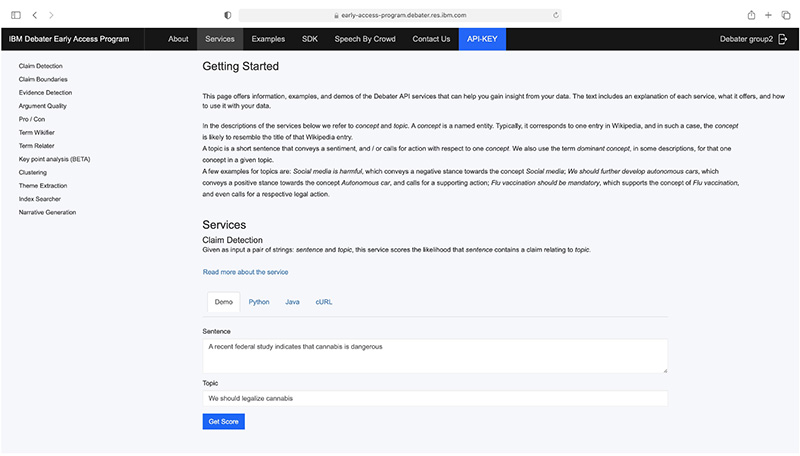

辩论是我们人类智力的基本能力，但是直到最近人工智能在这一方面，仍然也只能望其项背空叹气。
2019 年 2 月，经过自然语言处理和机器学习研究人员和工程师 6 年的工作，一个名为 Project Debater 的 IBM 人工智能系统成为第一个能够就复杂话题与人类进行辩论的人工智能系统。
尽管它可能没有赢得当年在旧金山与辩论冠军 Harish Natarajan 的辩论赛，Project Debater 向大家展示了人工智能如何帮助人们建立有说服力的论据和做出明智的决定。Project Debater 成为继深蓝（Deep Blue）和沃森（Watson）之后，IBM 研究人工智能系列大挑战中的第三个人工智能。
在我们最近发表在《自然》杂志上的论文自主辩论系统中，我们描述了 Project Debater 的架构并评估了它的性能。我们还向大家提供对 Project Debater 的 12 种底层技术作为云 API 的学术用途的免费访问，以及适用于开发者的试用和许可选择。
要与人类辩论，人工智能必须具备一定的技能。它必须能够在大量语料库中精确地找出某一特定辩论主题的相关论据，检测论据的立场，并评估论据的质量。它还必须识别与特定主题相关的一般性、反复出现的论据，将不同类型的论据组织成令人信服的叙述，识别人类对手提出的论据，并进行反驳。而且，它必须能够运用竞争性辩论技巧，比如向对手提问，以有利于自己立场的方式构建讨论框架。
这正是我们对 Project Debater 所做的。它被开发成一个组件的集合，每个组件都被设计用来执行一个特定的子任务。这些年来，我们发表了 50 多篇论文描述了这些组件并发布了许多学术用途相关的数据集。
想要成功地参与辩论，机器需要每个部件的高精度。举个例子，如果没有察觉到对方的立场，可能会导致有利于对方的辩论 —— 这在辩论中将会是一种糟糕的处境。
这就是为什么对我们而言收集独特的大规模、高质量标记训练数据集供 Project Debater 是关键的。举个例子，证据检测分类器在 200000 个标记的例子上进行了训练，并且取得了显著的精度前 40 名候选数据集的 95%。
另一个主要挑战是可拓展性。例如，我们必须将“维基化”（识别维基百科概念的提及）应用到我们的 100 亿句语料库中 —— 这对于任何现有的维基化工具来说都是不可能完成的任务。因此，我们开发了一种新的快速维基化算法，可以应用于大规模的语料库，并获得具有竞争力的准确性。
Project Debater 的 API 允许访问最初为实时辩论系统开发的不同功能，以及我们最近开发的相关技术。这些 API 包括处理 wikification、和 Wikipedia 概念之间的语义关联的自然语言理解功能短文本聚类，文本公共主题提取。
API 的核心集合与用于参数挖掘和分析的服务相关。这些服务包括侦查含有索赔和证据的判决，检测索赔边界在句子中，论点质量评估和姿态分类（赞成/反对）。
还有两个高级服务的 API，它们创建不同类型的摘要、叙述生成和关键点分析。当给定一组论据时，叙事生成会根据指定的极性构造一个结构良好的演讲，支持或质疑给定的主题。
而关键点分析是一种崭新的、有前景的总结方法，具有重要的定量角度。该服务将给定主题的评论集总结为一小组关键点，每个关键点的突出程度由在给出的评论里匹配句子的数量来表示。
关键点分析和叙事生成最近在“这是有争议的”电视连续剧和“格莱美与 Watson 辩论”后台经验，他们总结了专业和数千人在网上参与了辩论，讨论的话题从社会问题到流行文化。
开发人员可以在开发文档网站上访问 Project Debater 的 API 文档。他们可以作为游客查看文档，并运行大多数服务的在线交互式演示，还可以看到使用这些服务的从端到端的示例代码。

一个例子是挖掘叙事。给出了一个有争议的话题，它演示了如何通过从维基百科语料库中挖掘内容来创建叙事。另一个是使用 Debater 服务来分析主题的自由文本调查，它是基于 Wikipedia 的概念来识别主题。
开发人员在自己的项目中运行代码示例或使用 Project Debater API 之前，需要先获得 API 密钥并下载 SDK。如需申请 API 密钥，请访问学术用 Project Debater 或发送电子邮件请求到 project.debater@il.ibm.com。您将收到一个用户名和密码，用来登录到初步试用网站，然后可以从 API 密钥选项卡获取您的个人 API 密钥。
Slonim, N., Bilu, Y., Alzate, C., et al. An autonomous debating system. Nature (2021). https://doi.org/10.1038/s41586-021-03215-w
如果发现译文存在错误或其他需要改进的地方，欢迎到 掘金翻译计划 对译文进行修改并 PR，也可获得相应奖励积分。文章开头的 本文永久链接 即为本文在 GitHub 上的 MarkDown 链接。